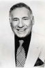

Country:United States, 96 minutes
Spoken languages:English
Genres:Comedy, Sci-Fi
Director(s):Mel Brooks
Writer(s):Mel Brooks, Thomas Meehan, Ronny Graham
Video Codec:Unknown
Number: 342


Certification:PG
Storyline:
When the nefarious Dark Helmet hatches a plan to snatch Princess Vespa and steal her planet's air, space-bum-for-hire Lone Starr and his clueless sidekick fly to the rescue. Along the way, they meet Yogurt, who puts Lone Starr wise to the power of "The Schwartz." Can he master it in time to save the day?
Cast: 


Medium: Bluray,
Loaned: No
Aspect ratio: Unknown